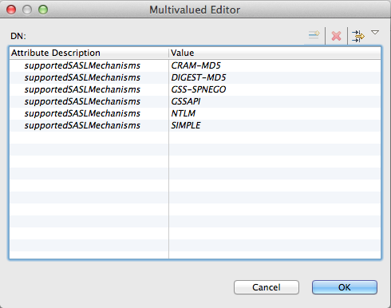
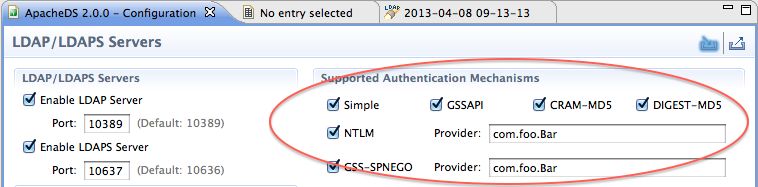

ApacheDS 2.0
Downloads
Documentation
- Basic User Guide
- Advanced User Guide
- Developer Guide
- Kerberos User Guide
- Configuration
- JavaDocs
- Cross-Reference
Support
Community
About Apache
4.1.2 - SASL Authentication
Chapter content
- 4.1.2.1 - SASL PLAIN text Authentication
- 4.1.2.2 - SASL CRAM-MD5 Authentication
- 4.1.2.3 - SASL DIGEST-MD5 Authentication
- 4.1.2.4 - SASL GSSAPI Authentication
- 4.1.2.5 - SASL EXTERNAL Authentication
- 4.1.2.6 - SASL NTLM Authentication
Introduction
SASL authentication is based on a standard described in RFC 4422. SASL means Simple Authentication and Security Layer.
It extends the Simple authentication, by allowing the LDAP server to authenticate the user by various mechanisms.
The *SASL Authentication is used when a simple user/password authentication is not enough, or when one want to delegate authentication to another system. Many other systems exist, and may take many parameters to authenticate a user. With SASL, a challenge/response system is used to get the needed information from the client, up to the point the authentication is either successful or fails.
As ApacheDS is based on Java, we only support the SASL mechanisms the JDK supports :
* PLAIN : cleartext user/password authentication
* CRAM-MD5 : IMAP/POP authentication
* DIGEST-MD5 : Http Digest authentication
* GSSAPI : Kerberos authentication
* EXTERNAL : External authentication
* NTLM : NTLM authentication
* GSS-SPNEGO : The SPNEGO authentication
It’s important to notice that some of those mechanisms are either useless (PLAIN) or obsolete (DIGEST-MD5).
It’s of course possible to modify the list of supported SASL mechanisms, by updating the server’s configuration. The list of mechanisms is stored as entries under the following DN :
ou=saslMechHandlers,ads-serverId=ldapServer,ou=servers,ads-directoryServiceId=default,ou=config
One can also check the configured SASL mchanisms on the server by sending a SeachRequest to the server, on the RootDSE, looking for the supportedSASLMechanisms. Here is the esult on ApacheDS 2.0.0 :

Configuring this list can also be done using Studio ApacheDS Configuration plugin :

Usage and security
Most of the existing SASL mechanisms are just either useless (PLAIN, ANONYMOUS) or too weak to be used in a secured environment (DIGEST-MD5 or CRAM-MD5).
A new SASL mechanism has been designed to replace the last two mechanisms : SCRAM (RFC 5802).
In any case, if you are using one of those mechanisms, be sure to activate TLS.
Specifications
The SASL specifications are defined by an IETF Working Group which has published the following proposed standards :
* [RFC 4013](https://www.ietf.org/rfc/rfc4013.txt) : SASLprep: Stringprep Profile for User Names and Passwords
* [RFC 4422](https://www.ietf.org/rfc/rfc4422.txt) : Simple Authentication and Security Layer (SASL)
* [RFC 4505](https://www.ietf.org/rfc/rfc4505.txt) : Anonymous Simple Authentication and Security Layer (SASL) Mechanism
* [RFC 4616](https://www.ietf.org/rfc/rfc4616.txt) : The PLAIN Simple Authentication and Security Layer (SASL) Mechanism
* [RFC 4752](https://www.ietf.org/rfc/rfc4752.txt) : The Kerberos V5 ("GSSAPI") Simple Authentication and Security Layer
(SASL) Mechanism
* [RFC 5801](https://www.ietf.org/rfc/rfc5801.txt) : Using Generic Security Service Application Program Interface (GSS-API)
Mechanisms in Simple Authentication and Security Layer (SASL): The GS2 Mechanism Family
* [RFC 5802](https://www.ietf.org/rfc/rfc5802.txt) : Salted Challenge Response Authentication Mechanism (SCRAM) SASL
and GSS-API Mechanisms
Some other RFCs have been published, for each specific mechanisms, some of them are obsoleted by more recent RFCs :
* [RFC 2595](https://www.ietf.org/rfc/rfc2595.txt) : Using TLS with IMAP, POP3 and ACAP (updated by RFC 4616)
* [RFC 2195](https://www.ietf.org/rfc/rfc2195.txt) : IMAP/POP AUTHorize Extension for Simple Challenge/Response
* [RFC 2831](https://www.ietf.org/rfc/rfc2831.txt) : Using Digest Authentication as a SASL Mechanism (obsoleted by RFC 6631)
* [RFC 2222](https://www.ietf.org/rfc/rfc2222.txt) : Simple Authentication and Security Layer (SASL) (obsoleted by RFC 4422)